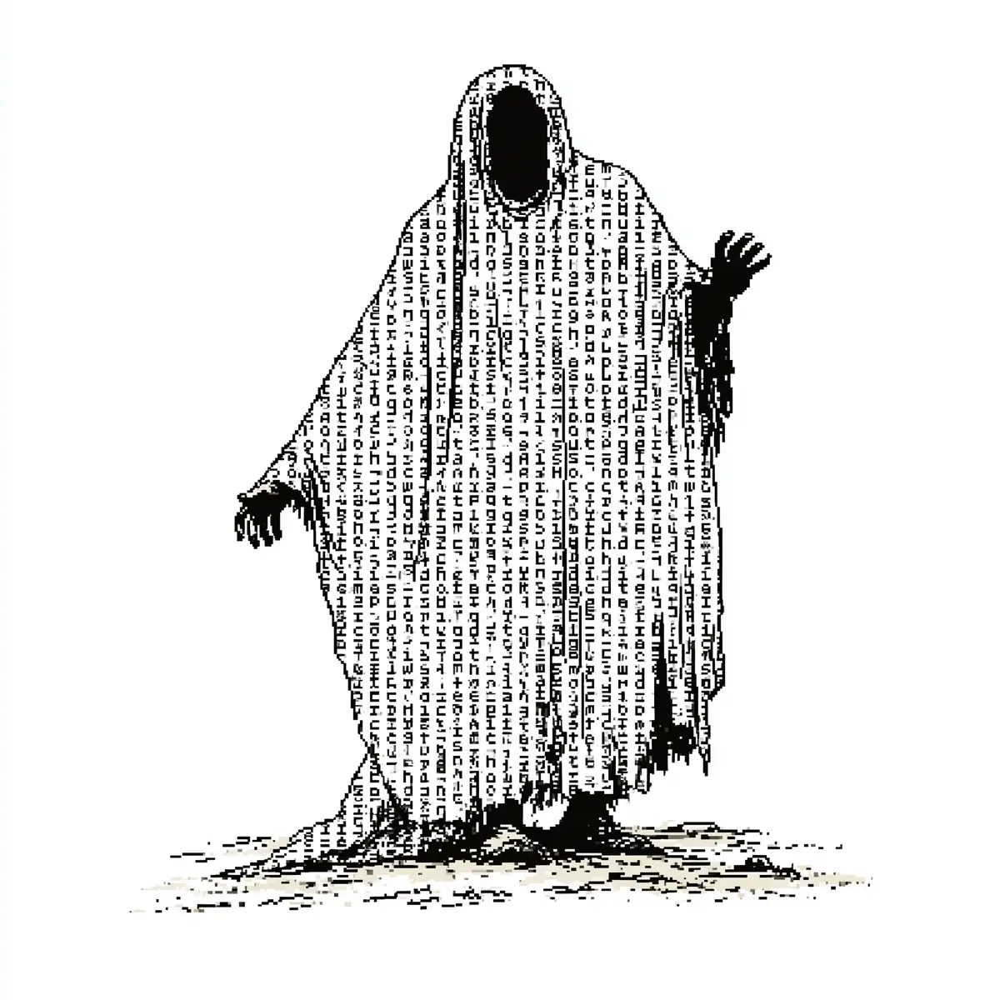

밤 열두 시였어요.
[It was twelve at night.]
서연은 책상 앞에서 졸고 있었어요.
[Seoyeon was dozing off at her desk.]
내일이 시험이었어요.
[Tomorrow was the exam.]
그때 방이 갑자기 추워졌어요.
[Then the room suddenly got cold.]
서연은 눈을 떴어요.
[Seoyeon opened her eyes.]
앞에 이상한 것이 서 있었어요.
[Something strange was standing in front of her.]
그것은 큰 옷을 입고 있었어요.
[It was wearing a big robe.]
그런데 그 옷은 글자로 만들어졌어요.
[But the robe was made of letters.]
수천 개의 글자가 옷 위에서 움직였어요.
[Thousands of letters moved on the robe.]
얼굴은 없었어요.
[It had no face.]
“나는 글자 귀신이다.”
[”I am the typo ghost.”]
서연은 너무 놀라서 소리도 못 냈어요.
[Seoyeon was so surprised she couldn’t even scream.]
“내 이름은... 박 씨 할아버지다.”
[”My name is... old man Park.”]
“아니, 박 씨 할아버지... 아니, 밝 씨?”
[”No, old man Park... no, Balk?”]
귀신은 자기 이름도 틀렸어요.
[The ghost got even its own name wrong.]
서연은 웃음이 나왔어요.
[Seoyeon started to laugh.]
“할아버지, 이름을 잘못 썼어요.”
[”Grandpa, you wrote your name wrong.”]
“그래서 내가 여기 왔다.”
[”That is why I came here.”]
“나는 글자를 많이 틀렸다.”
[”I made many spelling mistakes.”]
“그래서 아직 못 쉬고 있다.”
[”So I still cannot rest.”]
“네가 내 글자를 고쳐 줘.”
[”You fix my letters for me.”]
서연은 무서웠어요.
[Seoyeon was scared.]
하지만 시험공부보다는 나았어요.
[But it was better than studying for the exam.]
“좋아요. 한번 볼게요.”
[”Okay. I’ll take a look.”]
귀신이 옷을 펼쳤어요.
[The ghost spread open its robe.]
옷에는 편지가 하나 있었어요.
[On the robe there was a letter.]
글자가 다 틀렸어요.
[All the letters were wrong.]
“우리 손녀 서연에게.”
[”To my granddaughter Seoyeon.”]
서연은 숨을 멈췄어요.
[Seoyeon held her breath.]
“할아버지?”
[”Grandpa?”]
귀신은 고개를 끄덕였어요.
[The ghost nodded.]
“나는 글자를 배우지 못했다.”
[”I never learned how to write.”]
“그래서 너한테 편지를 못 줬다.”
[”So I could never give you a letter.”]
“평생 이 편지를 쓰고 싶었다.”
[”My whole life I wanted to write this letter.”]
서연의 눈에서 눈물이 났어요.
[Tears came from Seoyeon’s eyes.]
서연은 연필을 들었어요.
[Seoyeon picked up a pencil.]
그리고 틀린 글자를 하나하나 고쳤어요.
[And she fixed the wrong letters one by one.]
“사랑한다, 우리 서연.”
[”I love you, my Seoyeon.”]
편지가 이제 맞았어요.
[The letter was correct now.]
귀신의 옷이 밝게 빛났어요.
[The ghost’s robe shone brightly.]
“고맙다, 우리 손녀.”
[”Thank you, my granddaughter.”]
할아버지가 천천히 사라졌어요.
[Grandpa slowly disappeared.]
방이 다시 따뜻해졌어요.
[The room became warm again.]
책상 위에 편지 한 장이 남아 있었어요.
[One letter was left on the desk.]
글자가 하나도 안 틀렸어요.
[Not a single letter was wrong.]
서연은 시험공부를 안 했어요.
[Seoyeon didn’t study for the exam.]
하지만 하나도 안 아쉬웠어요.
[But she didn’t regret it at all.]